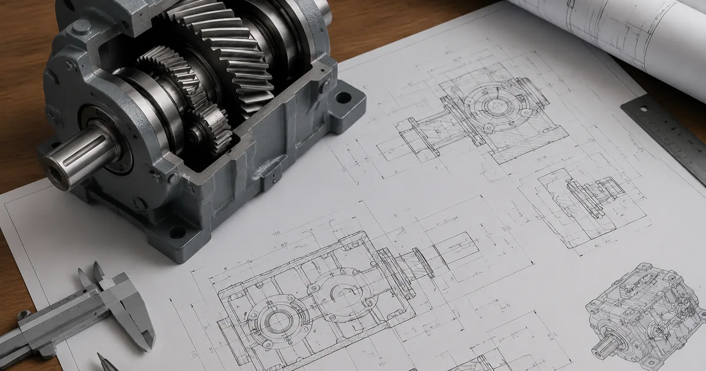

Собственное производствоПромышленные редукторы для производителей оборудования•Отгрузка по всей России•Аналоги SEW, NORD, Bonfiglioli без переделки рамы•Расчёт и КП за 15 минут•Гарантия 36 месяцевПромышленные редукторы для производителей оборудования•Отгрузка по всей России•Аналоги SEW, NORD, Bonfiglioli без переделки рамы•Расчёт и КП за 15 минут•Гарантия 36 месяцев
Чертежи и размеры редукторов Tos Znojmo: что сверять для замены

Опыт инженеров Завода Редукторов · время чтения ~6 минут
Замена Tos Znojmo на ZR упирается в геометрию: вал, фланец и межосевое расстояние определяют, сядет ли аналог на место снятого редуктора. Ниже — что именно замерять, где искать габаритную схему и как сверить присоединительные точки до заказа.
Габаритные и присоединительные размеры
Габаритные размеры описывают корпус и выступающие части: длину, ширину, высоту, посадочный пояс. Присоединительные — вал, фланец и отверстия под крепёж. Для замены решают вторые: они должны лечь в посадку механизма без доработок.
Размер
За что отвечает
Диаметр и длина вала
посадка муфты, шкива или звёздочки
Диаметр фланца
прилегание к корпусу механизма
Расположение отверстий
крепёж к раме или опоре
Межосевое расстояние
центры валов и габарит по высоте
Высота и ширина корпуса
свободное пространство монтажа
Какие размеры сверять для замены
Диаметр и длина выходного вала под посадку муфты, шкива или звёздочки;
Диаметр фланца для прилегания к корпусу механизма;
Расположение отверстий по кругу для крепежа к раме или опоре;
Межосевое расстояние — центры валов и габарит по высоте;
Высота и ширина корпуса под свободное пространство монтажа.
Пять-семь замеров штангенциркулем или линейкой закрывают вопрос по посадке. Отдельно проверяют шпоночный паз — его ширину и глубину.
Где взять чертёж аналога
В карточках типоразмеров каталога лежат габаритные схемы ZR с присоединительными размерами. Замерьте свой Tos Znojmo и сверьте с ними до оформления заказа, а не после отгрузки.
Сверка посадочных размеров перед установкой аналога ZR
Соответствие типоразмеров и полные размерные таблицы — в каталоге редукторов.
Если посадочные размеры не совпадают
Если вал или фланец расходятся с посадкой, переходные втулки и фланцы закрывают зазор, но теряется жёсткость и соосность. Выгоднее сразу взять типоразмер с совпадающим валом и фланцем — монтаж идёт без переделок.
Снятие редуктора с вала и выравнивание соосности без повреждений — в статье как снять редуктор с вала.
Проверка перед заказом
Вал и шпоночный паз под муфту;
Фланец и крепёжные отверстия;
Межосевое и габариты корпуса;
Свободное место под корпус аналога ZR;
Направление вращения и положение вала.
После сверки геометрии считают момент, передаточное отношение и сервис-фактор — порядок выбора разобран в статье аналоги Tos → ZR.
Доставка, оплата и гарантия
Отгружаем со склада в Челябинске транспортными компаниями по России и СНГ. Гарантия завода — 36 месяцев, паспорт и декларация соответствия в комплекте.
Вывод
Чертёж и замеры — первый шаг: сначала вал, фланец и межосевое, потом момент с передаточным. Инженер пришлёт габаритную схему аналога ZR и сверит её с вашим замером до отгрузки.
Пришлите чертёж механизма или замеры старого редуктора на zr@zavod-red.ru — сверим и пришлём КП в течение дня.
Вопросы и ответы
Частые вопросы
Какие размеры нужны для замены?
Для редуктора Tos Znojmo сверяют вал, фланец, межосевое расстояние и габариты корпуса — по этим размерам подбирается посадка аналога ZR.
Где взять чертёж редуктора Tos?
Чертёж редуктора Tos Znojmo можно найти на карточках типоразмеров ZR и в каталоге; если есть оригинал, снимем размеры с образца.
Чем габаритные размеры отличаются от присоединительных?
У редуктора Tos Znojmo габаритные размеры описывают корпус и выступающие части, а присоединительные — вал, фланец и отверстия под крепёж.
Что будет, если посадочные размеры не совпадут?
Аналог не встанет на место старого — понадобятся переходные детали или другой типоразмер.
Можно ли заказать чертёж аналога?
Да, инженер пришлёт габаритный чертёж выбранного типоразмера ZR вместе с КП.
Сколько стоит подбор по чертежу?
Бесплатно: чертёж, сверка размеров и КП — в течение дня.
Как заказать редуктор по образцу?
Пришлите фото или чертёж старого редуктора — изготовим аналог с теми же присоединительными. Переходной фланец или спецвал — спроектируем под вашу геометрию.
Какие документы получите с редуктором?
Паспорт изделия с характеристиками, декларация ЕАС, сертификат ГОСТ 31592-2012. Гарантия 36 месяцев — при поломке меняем по договору.
Подобрать аналог Tos Znojmo → ZR
Пришлите чертёж или замеры — инженер сверит размеры и подберёт аналог ZR под посадку.
Рекомендуете наши редукторы коллегам, заказчику или своему отделу снабжения? За каждый состоявшийся заказ по вашей рекомендации выплачиваем 5% от суммы — реферальное вознаграждение переводом на карту. Прозрачный договор, работа со снабженцами и проектными отделами напрямую, отгрузка от производителя (ООО «НИИ АТТ», Челябинск).